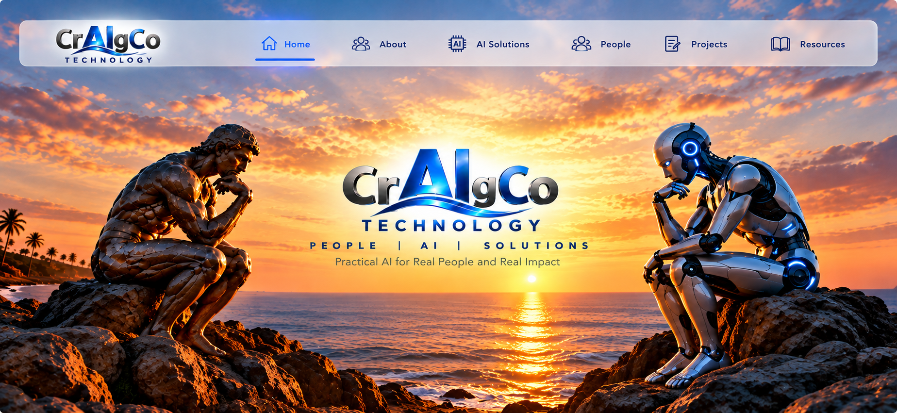
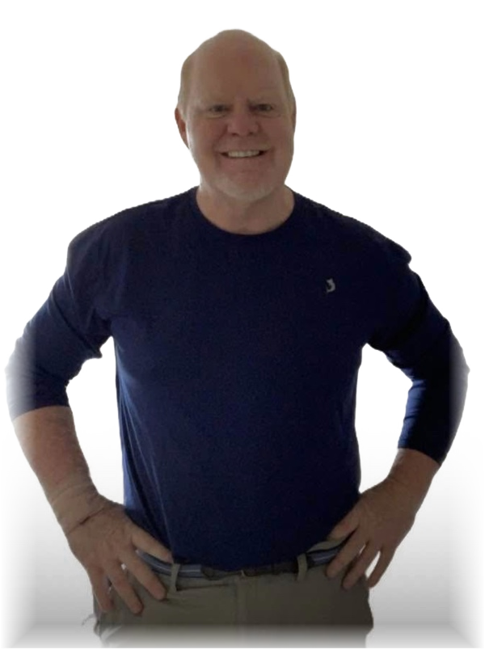

01 / Gather
Seminars
Big questions. Friendly conversation. Live demonstrations that make AI feel useful and approachable.
People. AI. A brighter tomorrow.
Technology gets interesting when it helps someone. CrAIgCo brings practical AI, patient teaching, and a little generosity into everyday life.
Find your path
01 / Three paths. One purpose.
Learn together. Build confidence.
Put opportunity into someone’s hands.
Big questions. Friendly conversation. Live demonstrations that make AI feel useful and approachable.
From “Where do I click?” to “Look what I made.” Practical skills, at a pace that works for you.
A device. A little guidance. A fresh start. Unconditional giving that opens the door to digital independence.
Make it concrete
02 / The way we work
The Thinker and the Robot represent a conversation: human judgment and new tools, working toward something useful.
A question, a frustration, a thing they want to make. That is where the work begins.
Write a better question. Organize a messy inbox. Learn a device. Make a small, useful thing.
Share a skill, offer a helping hand, or help someone get the technology to begin.
03 / The T.O.P. Team
A human creative partner. Three AI personalities.
Quite a few ideas. A little well-organized chaos.
Craig brings the vision. Leslie brings human creativity and direction. AIngel (ChatGPT) coordinates ideas and execution; Claude brings analysis and structure; Gemini explores creative possibilities. The cartoons give our collaboration a face—and a sense of humor.

Craig Holland04 / A human at the center
Law. Hands-on care. Teaching anatomy and physiology. Community advocacy. And now, work in legal AI.
Craig Holland’s experience has always involved helping people understand something complicated and take the next step. CrAIgCo brings that same practical, personal approach to technology.
Your ideas, taking shape
Open Content Studio to shape the three paths. Try the copy, choose the content blocks, and keep a brief of your decisions.